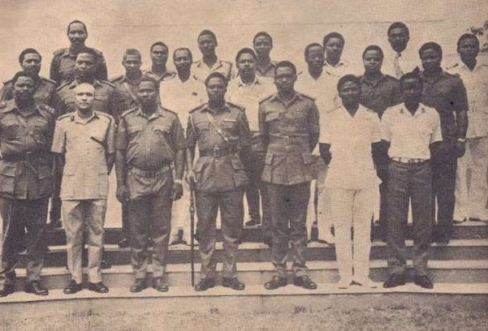

Gen. Murtala Muhammed
An Exemplary Leader

Late Gen. Murtala Muhammed (middle-front row) with members of his Supreme Miltary
Council.
Here's a time line of Gen. Murtala Muhammed:
- 1938 - Born on November 8, in Kano.
- 1957 - He obtained a school leaving certificate from Berewa College in Zaria and applied to join the Nigerian army later in the year.
- 1958 - Murtala Muhammed joined the Nigerian Army and then was trained as an officer cadet at Sandhurst Royal Military Academy in England.
- 1961 - He was commissioned as a second lieutenant and assigned to the Nigerian Army Signals.
- 1962 - Muhammed was appointed aide-de-camp to M. A. Majekodunmi, the federally-appointed administrator of the Western Region.
- 1963 - He became the officer-in-charge of the First Brigade Signal Troop in Kaduna, Nigeria.
- 1964 - He was promoted to major and appointed officer-commanding, 1st Signal Squadron in Apapa, Lagos.
- 1965 - He was made acting Chief of Signals of the Army, while his paternal uncle, Inuwa Wada had recently been appointed Defense Minister.
- 1966 - Muhammed was promoted to Lieutenant Colonel and was the inspector of signals posted to Army Headquarters, Lagos. Muhammed opposed the regime of Johnson Aguiyi-Ironsi, which took power after a coup d'etat.
- 1971 - He became brigadier general at age 33, becoming one of the youngest generals in Nigeria.
- 1974 - General Yakubu Gowon appointed Muhammed as the Federal commissioner for communications to oversee and facilitate the nation's development of cost effective communication infrastructures during the oil boom.
- 1975 - Muhammed took power as the new Military Head of State. Brigadiers Obasanjo (later Lt. General) and Danjuma (later Lt. General) were appointed as Chief of Staff, Supreme HQ and Chief of Army Staff, respectively.
- 1976 - The Military Government of Murtala Muhammed created new states and renamed others, the states he created include: Bauchi, Benue, Borno, Imo, Niger, Ogun, and Ondo. This brought the total number of states in Nigeria to nineteen. Murtala Muhammed was killed, aged 37, along with his aide-de-camp, Lieutenant Akintunde Akinsehinwa, in his black Mercedes Benz saloon car.
- 2023 - Muhammed's portrait adorns the 20 Naira note and Murtala Muhammed International Airport in Lagos is named in his honour. Murtala Muhammed had received several awards and medals. They include Forces Service Star (FSS), General Service Medal (GSM), Meritorious Service Star (MSS), National Service Medal (NSM), Republic Medal (RM).
- "The people who took over from Murtala killed the hope that the military [could] make such a stay brief and final. We missed a chance to reap from the event itself; the purpose for which he was killed. We didn't learn any lesson.”
- -- Baba-Ahmed, PhD.